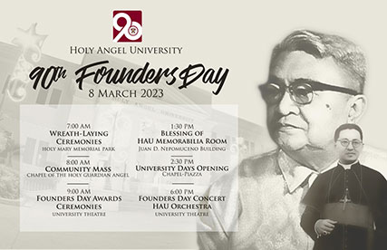

Phone Support24 HOURS A DAY+ 63 926 940 6316 |
SOCIAL MEDIA CHANNELS |
Our NewsletterSIGN UP FOR SPECIAL OFFERS |
|  |
March 08, 2023 |
|
The celebration starts with a wreath-laying at the gravesite of the founder Juan D. Nepomuceno, who, in 1933, created a new high school in Angeles City to provide accessible quality education as an alternative to Manila schools. Holy Angel has since become one of the largest and most prestigious private universities in the province and the country.
Following that, Holy Mass was held in the Holy Guardian Angel Chapel at the University. OIC President Leopoldo Jaime Valdes delievered a message to commemorate the milestone and introduce the newest members of the HAU Board of Trustees, including its Chairman, Most Rev. Florentino Lavarias, D.D., Archbishop of San Fernando and a HAU college alumnus.
The highlight of the celebration is the presentation of the Founders Day Awards to six great individuals chosen by the University for their significant contributions and achievement in various fields, including an alumnus, a retiree, a Kapampangan artist, a Kapampangan scholar, and two Filipinos championing Catholic education and community service. The HAU Memorabilia Room was revealed during the afternoon by the Center for Kapampangan Studies. The University Student Council (USC) then kicked off the four-day University Days celebration with a celebratory parade. The HAU Orchestra, conducted by Maestro Edwin Lumanug, concluded the Founders Day celebration with a free concert at the University Theatre, featuring various opera classics by Verdi, Mozart, Bizet, Mascagni, and Massanet. This public performance was a follow-up to the orchestra's successful Sintang Kapampangan concert last December. Reference: https://www.hau.edu.ph/news/read/bf9e9998a83a0659666e3e32cd4c051f0a82aa46/HAU+celebrates+90th+Founders+Day+on+March+8 Image src: https://www.facebook.com/holyangel1933/photos/a.250579045050563/4376850912423335 https://www.hau.edu.ph/news/read/bf9e9998a83a0659666e3e32cd4c051f0a82aa46/HAU+celebrates+90th+Founders+Day+on+March+8 |